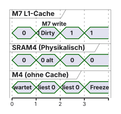

graph TD
MC[Multicore] --> SMP[SMP Symmetrisch]
MC --> AMP[AMP Asymmetrisch]
style MC fill:#FFFFFF,stroke:#1D1D1F,stroke-width:1px !important
style SMP fill:#FFFFFF,stroke:#E2001A,stroke-width:2px !important
style AMP fill:#FFFFFF,stroke:#E2001A,stroke-width:2px !important
06 · Multicore-Echtzeit
AMP, STM32H755 und Shared Memory · EZS · DHBW Stuttgart
Prof. Dr.-Ing. Daniel Klünder
Willkommen in der Multicore-Königsklasse!
- Herzlich willkommen zum 6. Termin unserer Vorlesung
- Die letzten 5 Wochen: Single-Core-Echtzeit (Scheduling, IPC, Interrupts)
- Heute heben wir die Komplexität auf das nächste Level: Multicore-Systeme
- Zwei unterschiedliche Prozessorkerne in einem Chip
- Praxis am Nachmittag: zweites „Gehirn“ des STM32H755 aufwecken
Agenda für heute
- Recap: Die Grenzen der Single-Core-Architektur
- Symmetrisches vs. Asymmetrisches Multiprocessing (SMP vs. AMP)
- Hardware Deep-Dive: Dual-Core-Architektur des STM32H755
- Boot-Prozess und Toolchain-Setup für zwei Kerne
- Die Speicherarchitektur (RAM-Domänen)
- [Nach der Pause] Shared Memory und Cache-Kohärenz
- Ausblick Labor: Ping-Pong-Datenaustausch
Recap: Die Grenzen des Single-Core
- Erinnern wir uns an die Schedulability-Tests (Termin 2)
- EDF-Schranke: \(\sum \frac{C_i}{T_i} \le 1\) (\(100\%\) Auslastung)
- Bei \(100\%\) CPU-Nutzung ist physikalisch Schluss
- Das Problem der Industrie:
- Steuergeräte sollen immer mehr können (KI, Ethernet, GUI)
- Gleichzeitig harte Timing-Regelkreise (\(100\,\text{µs}\) Raster)
- Wie bekommen wir mehr Rechenleistung in das System?
Erhöhung der Taktfrequenz?
- Warum takten wir den Cortex-M4 nicht mit \(5\,\mathrm{GHz}\) statt \(240\,\mathrm{MHz}\)?
- Die Power Wall (Leistungsmauer):
- Höherer Takt → höhere Spannung → exponentiell mehr Abwärme
- Embedded Systems oft ohne Lüfter (z. B. vergossenes Motorsteuergerät)
- Die Memory Wall (Speichermauer):
- RAM-Zugriffszeiten skalieren nicht mit CPU-Takten
- Die CPU wartet auf Daten (Pipeline Stalls)
Der Ausweg: Multicore-Architekturen
- Lösung: lieber mehrere langsame, effiziente Kerne als ein extrem heißer, schneller Kern
- Beispiele aus der Industrie:
- Automotive Domain Controller: viele kleine Steuergeräte in einem Multicore-Chip
- Industrie 4.0 (Edge Computing): ein Core steuert die Maschine (harte Echtzeit), ein anderer funkt in die Cloud (weiche Echtzeit)
- Multicore in der Echtzeit ist fundamental anders als in Ihrem Laptop
Multiprocessing-Architekturen
Zwei grundlegende Konzepte:
- SMP (Symmetric Multiprocessing)
- AMP (Asymmetric Multiprocessing)
Beide haben unterschiedliche Einsatzgebiete.
Symmetrisches Multiprocessing (SMP)
- Die PC- und Smartphone-Welt (Windows, Linux, Android, iOS)
- Architekturmerkmale:
- Alle Kerne physisch identisch (z. B. 4× Cortex-A53)
- Gemeinsamer physikalischer Speicher (RAM)
- Genau ein Betriebssystem über alle Kerne
- Das OS orchestriert alle Kerne zentral
Wie funktioniert ein SMP-Scheduler?
- Das OS hat eine Ready-Warteschlange für Tasks
- Load-Balancing: Tasks dynamisch auf den Kern mit wenig Last
- Task-Migration: Millisekunde 1 auf Core 0, Millisekunde 2 auf Core 1
graph TD
OS[Single OS Linux / Windows] --> TQ[Task-Queue]
TQ --> C0[Core 0 Task A]
TQ --> C1[Core 1 Task B]
TQ --> C2[Core 2 Task C]
C2 -.->|Migration| C0
style OS fill:#FFFFFF,stroke:#1D1D1F,stroke-width:1px !important
style TQ fill:#F5F5F7,stroke:#E2001A,stroke-width:2px !important
style C0 fill:#FFFFFF,stroke:#E2001A,stroke-width:2px !important
style C1 fill:#FFFFFF,stroke:#E2001A,stroke-width:2px !important
style C2 fill:#FFFFFF,stroke:#E2001A,stroke-width:2px !important
Warum SMP für harte Echtzeit oft scheitert
- SMP ist genial für Durchsatz, aber für harte Echtzeit oft problematisch
- Latenz-Probleme:
- Task-Migration kostet Zeit (Register von Kern zu Kern)
- Cache-Thrashing: L1-Cache des Zielkerns ist leer → Cache-Misses
- Contention: mehrere Kerne auf demselben RAM-Bus → Mikro-Staus
- Ergebnis: WCET wird schwerer vorherzusagen (oft unpraktisch für harte Deadlines)
Asymmetrisches Multiprocessing (AMP)
- Die Embedded-Welt (Steuergeräte, Motor-Regler)
- Architekturmerkmale:
- Kerne oft unterschiedlich (z. B. Cortex-M7 und Cortex-M4)
- System strikt partitioniert
- Jeder Kern führt eigenes Programm / OS aus
- Kerne wissen beim Start oft nichts voneinander
Software-Aufteilung in AMP
Core 1 (z. B. Cortex-M7)
- OS: Embedded Linux oder Bare-Metal
- Job: GUI, Netzwerk (TCP/IP), ML
- Fokus: Durchsatz (weiche Echtzeit)
Core 2 (z. B. Cortex-M4)
- OS: FreeRTOS oder AUTOSAR
- Job: PWM, Encoder, PID-Regler
- Fokus: Determinismus (harte Echtzeit)
- \(100\%\) CPU-Load auf Core 1 hat keine Auswirkung auf das Timing von Core 2
Wie kommunizieren AMP-Kerne?
- Kein gemeinsames OS → keine normale FreeRTOS-Queue von Core 1 nach Core 2
- Kommunikation über Hardware-Mechanismen:
- Message Buffers (Hardware-Mailboxes): Schreiben löst Interrupt am anderen Kern aus
- Hardware-FIFOs: echte Puffer zwischen den Kernen
- Shared Memory (SRAM): vereinbarter RAM-Bereich mit physischem Zugriff beider Kerne
- Heute: Shared Memory — flexibel, aber gefährlich
Zusammenfassung Block 1
| Eigenschaft | SMP (Symmetrisch) | AMP (Asymmetrisch) |
|---|---|---|
| Kerne | Identisch | Oft heterogen |
| Betriebssystem | Ein gemeinsames OS | Getrennte Programme / OS |
| Lastverteilung | Dynamisch durch Scheduler | Statisch durch Programmierer |
| Determinismus | Oft schwierig (Migration, Cache-Misses) | Typischerweise besser isolierbar |
| Beispiel | Laptop, Raspberry Pi | STM32H755, NXP i.MX RT |
Hardware Deep-Dive: Der STM32H755
- Ein Silizium-Plättchen (Die), zwei getrennte Prozessorkerne
graph TD
CHIP[STM32H755 Chip]
CHIP --> M7[Cortex-M7 Spec max 480 MHz]
CHIP --> M4[Cortex-M4 Spec max 240 MHz]
style CHIP fill:#FFFFFF,stroke:#1D1D1F,stroke-width:1px !important
style M7 fill:#F5F5F7,stroke:#E2001A,stroke-width:2px !important
style M4 fill:#F5F5F7,stroke:#E2001A,stroke-width:2px !important
- Trotzdem teilen sie sich Pins, Taktquellen und Speicher
- Wie organisiert STMicroelectronics dieses Chaos?
Der Cortex-M7 (Das Muskelpaket)
- Unser Core 1 (Master)
- Specs: bis \(480\,\mathrm{MHz}\), 6-stufige superskalare Pipeline
- Superskalar: zwei Instruktionen in einem Taktzyklus möglich
- Caches:
- L1 Data Cache (\(16\,\mathrm{KB}\))
- L1 Instruction Cache (\(16\,\mathrm{KB}\))
- FPU: Double-Precision (64-Bit)
- Ziel: Rechenleistung, schnelle Netzwerk-Verarbeitung
Der Cortex-M4 (Das Präzisionswerkzeug)
- Unser Core 2
- Specs: bis \(240\,\mathrm{MHz}\), 3-stufige Pipeline
- Wichtigster Unterschied: keine Caches!
- Ausführungszeit eines Assembler-Befehls ist absolut deterministisch
- FPU: Single-Precision (32-Bit)
- Ziel: harte Echtzeit-Regelung, enge Anbindung an Timer und ADC
- Hier lassen wir FreeRTOS laufen
Die Bus-Matrix (AHB / AXI)
- Kerne, Speicher und Peripherie: keine einzelne Leitung, sondern eine Matrix
- AXI-Bus-Matrix: Netzwerk aus Schaltern
- Vorteil: M7 liest Flash, während M4 eine GPIO-LED schaltet — ohne Blockade
- Blockaden nur, wenn beide Cores im selben Takt dasselbe Ziel treffen
Die 3 Power-Domänen (D1, D2, D3)
- D1 (High-Performance Domain):
- Cortex-M7, AXI-SRAM, High-Speed USB, Ethernet
- D2 (Real-Time Domain):
- Cortex-M4, SRAM 1/2/3, Timer, ADCs, UARTs
- D3 (Low-Power Domain):
- RTC, SRAM 4
- Läuft oft weiter, wenn D1 und D2 schlafen
Taktversorgung (RCC)
- Specs vs. Board-Setup (kanonisch für diese Vorlesung):
| Kern | Spec-Maximum | Typisches Nucleo-Setup |
|---|---|---|
| Cortex-M7 | bis \(480\,\mathrm{MHz}\) | \(400\,\mathrm{MHz}\) |
| Cortex-M4 | bis \(240\,\mathrm{MHz}\) | \(200\,\mathrm{MHz}\) |
- Beide Kerne haben eigene Phasenregelkreise (PLLs)
- Achtung im CubeMX Configurator:
- Änderungen am System Clock beeinflussen meist beide Kerne
- Stoppt Core 1 die PLL, crasht Core 2
Der Boot-Prozess: Wer weckt wen?
- Beim Einschalten starten nicht beide Kerne
- Cortex-M7 ist der Master und bootet zuerst
- Cortex-M4 ist der Slave und bleibt im Reset (Hold)
- Aufgabe des M7:
- System-Clock hochfahren
- RAM und Peripherie stabilisieren
- Hardware-Schalter umlegen, der den M4 entfesselt
Hardware-Register: Den M4 wecken
- Schalter im Power-Management-Register (PWR)
- In der
main.cdes M7:
- Ohne diese Zeile läuft FreeRTOS auf dem M4 nie
Pin-Zuweisung im Dual-Core
- Dem Chip ist egal, wer einen GPIO-Pin schaltet
- Gefahr: M7 und M4 konfigurieren denselben Pin → Register-Konflikte
- Im CubeMX Configurator:
- Pin Context Assignment → ARM Cortex-M7 oder ARM Cortex-M4
- Codegenerator schreibt
HAL_GPIO_Initnur in diemain.cdes zugewiesenen Cores
Toolchain und Projektstruktur
- Dual-Core-Projekt in CubeIDE: drei Ordner
Project_CM7: eigenemain.c, eigene Linker-SkripteProject_CM4: isolierte Code-Basis für den M4Project_Common: gemeinsame Dateien (z. B. HAL-Treiber)
- Beim Kompilieren entstehen zwei unabhängige
.elf/.bin-Dateien
Debugging im AMP-System
- ST-Link unterstützt Multicore-Debugging
- Debug startet zwei GDB-Instanzen parallel
- Zwei Konsolen: Breakpoints von M7 und M4 umschalten
- Flashen: Programm 1 in Bank 1, Programm 2 in Bank 2
Zusammenfassung Block 2
- STM32H755: High-Performance-Kern (M7 mit Cache) und Echtzeit-Kern (M4 ohne Cache)
- Bus-Matrix routet Zugriffe kreuzungsfrei — außer bei exakt demselben Ziel
- M7 bootet zuerst und weckt den M4
- Zwei unabhängige Firmware-Dateien aus zwei Code-Ordnern
Die Speicherarchitektur (RAM)
- Datenaustausch M7 → M4 braucht Shared Memory
- Fast \(1\,\mathrm{MB}\) RAM, aber aufgeteilt:
- AXI-SRAM (D1): klebt am M7 — schnell für M7, langsam für M4
- SRAM 1/2/3 (D2): klebt am M4 — schnell für M4, langsam für M7
- SRAM 4 (D3): unabhängig, oft für Peripherie oder Standby
Wo legen wir den Shared Memory an?
- Neutraler Ort, gut erreichbar für beide Kerne
- Best Practice: SRAM4 in der D3-Domäne
- Basis-Adresse:
0x38000000(Größe: \(64\,\mathrm{KB}\)) - Ziel: C-Struct für Sensorwerte exakt an diese Adresse legen
- Wie zwingen wir den Compiler dazu?
Das Linker-Script (.ld)
- GCC erzeugt Maschinencode; der Linker legt physikalische Adressen fest
- Linker-Skripte beider Kerne anpassen:
Eine eigene Sektion anlegen
- Sektion (Container) im Shared-RAM anlegen:
- Extrem wichtig:
(NOLOAD)- Ohne NOLOAD füllt der Startup-Code den RAM mit Nullen
- M7 schreibt, M4 bootet \(1\,\mathrm{ms}\) später → Shared Memory wird genullt
Zuweisung im C-Code (GCC-Attribute)
- Wir haben den RAM (
.shared_memory) im Linker-Script reserviert - Wie sagen wir dem Compiler, dass unser Struct genau dort landen soll?
- Die Lösung: ein Compiler-spezifisches Attribut (
__attribute__) - Wir „nageln“ die Variable physisch auf die Adresse
0x38000000fest
Das Schlüsselwort volatile
- Ein weiteres Problem beim Speichern: der C-Compiler-Optimizer (
-O2/-O3) - Der Compiler analysiert den Code einer Task (z. B. auf dem M4)
- Er sieht eine
while(sd.m7_ready == 0);-Schleife - Er denkt: „In meiner Task ändert niemand diese Variable. Also lese ich sie nur 1× aus dem RAM und nutze danach für immer ein CPU-Register!“ \(\rightarrow\) Endlosschleife!
- Lösung:
volatile - Sagt dem Compiler: Diese Variable kann sich jederzeit durch externe Hardware (oder einen anderen Kern) ändern! Lese sie bei JEDEM Zugriff zwingend frisch aus dem RAM!
Reicht volatile für Multicore?
- Wir haben die Variable im richtigen SRAM platziert (
__attribute__) - Wir haben den Compiler gezwungen, immer aus dem RAM zu lesen (
volatile) - Sind wir jetzt sicher?
- NEIN! Absolut nicht
volatilekontrolliert nur den Software-Compiler. Es kontrolliert nicht die Hardware-Caches der CPU!- Hier betreten wir das gefährlichste Feld der Embedded-Entwicklung
Struktur der Ping-Pong Daten
- Für unser Labor bauen wir uns ein C-Struct, das beide Kerne kennen
- Beide Kerne binden dieselbe Header-Datei ein!
Zusammenfassung: Shared Memory
- AMP erfordert physikalischen Datenaustausch, da es kein gemeinsames Betriebssystem gibt
- Wir nutzen den SRAM4 (D3-Domäne), da er für beide Kerne gut erreichbar ist
- Die Adress-Zuweisung erfolgt über das Linker-Script (
.ld) und__attribute__((section)) - Das Flag
NOLOADschützt den RAM vor dem Überschreiben beim Booten - Das Keyword
volatilestoppt gefährliche Compiler-Optimierungen
Was ist ein CPU-Cache?
- Die CPU (Board-Setup z. B. \(400\,\mathrm{MHz}\)) ist extrem schnell
- Der Hauptspeicher (SRAM) ist langsam (z. B. braucht ein Zugriff \(5\) Taktzyklen)
- Der L1-Cache:
- Ein winziger, aber unfassbar schneller SRAM direkt im Prozessorkern (\(1\) Taktzyklus)
- Wenn die CPU eine Variable aus dem RAM liest, kopiert die Hardware einen ganzen Block (Cache-Line, \(32\,\mathrm{Byte}\)) in den Cache
- Beim nächsten Lesen wird die Variable aus dem Cache geholt (blitzschnell!)
Write-Through vs. Write-Back
- Was passiert, wenn der C-Code eine Variable schreibt (
sd.m7_ready = 1;)? - Write-Through:
- Die CPU schreibt den Wert in den Cache UND sofort parallel durch in den Haupt-RAM
- (Sicher, aber langsamer)
- Write-Back (häufig, solange die Region cacheable ist):
- Die CPU schreibt den Wert NUR in den internen Cache!
- Der echte SRAM bleibt veraltet (Stale Data)
- Der Cache schreibt die Daten erst in den RAM zurück (Eviction), wenn er Platz für neue Variablen braucht
Das Drama der Cache-Kohärenz
- Das Szenario:
- Der Cortex-M7 rechnet einen Wert aus und setzt das Flag
m7_ready = 1 - Dank Write-Back landet die 1 nur im L1-Cache des M7. Im SRAM4 steht weiterhin 0
- Der Cortex-M4 (ohne Cache) fragt über die Bus-Matrix den SRAM4 ab
- Der SRAM4 antwortet mit 0
- Der Cortex-M7 rechnet einen Wert aus und setzt das Flag
- Ergebnis: Der M4 wartet ewig. Die Cores sind asynchron. Die Daten sind korrumpiert!
- Dieses Problem nennt man einen Cache Coherency Failure
Visualisierung: Cache Coherency Failure

- Der M4 sieht die neuen Daten des M7 nicht, da sie im L1-Cache „feststecken“
HW-Lösung in PCs: Cache-Snooping
- Wie löst Ihr Intel-i7 im Laptop das Problem?
- Er nutzt Hardware-Snooping (z. B. MESI-Protokoll)
- Die Kerne „schnüffeln“ (Snoop) gegenseitig auf dem Bus
- Wenn Core 2 den RAM liest, bemerkt Core 1 das, unterbricht den Vorgang, schreibt schnell seinen Cache in den RAM und lässt Core 2 dann erst lesen
- Warum hat der STM32H755 das nicht?
- Snooping kostet extrem viel Siliziumfläche, viel Strom und (das Schlimmste) verursacht unvorhersehbare Bus-Latenzen \(\rightarrow\) Gift für harte Echtzeit!
Software-Lösung 1: Manuelles Management
- Wir zwingen den M7 per C-Code, seinen Cache zu leeren
- Die
core_cm7.h-Bibliothek bietet dafür spezielle CMSIS-Befehle:SCB_CleanDCache_by_Addr(...): Nimm diese Variable aus dem L1-Cache und schreibe sie zwingend sofort in den SRAM durch! (nach dem Schreiben)SCB_InvalidateDCache_by_Addr(...): Verwirf diese Variable im L1-Cache! Zwinge die CPU, sie beim nächsten Mal direkt aus dem SRAM zu lesen! (vor dem Lesen)
Nachteile der Software-Lösung
- Warum wir das im Labor NICHT machen:
- Man vergisst es extrem leicht \(\rightarrow\) schwer zu findende Bugs
- Der Cache arbeitet immer in \(32\)-Byte-Blöcken (Cache-Lines). Wenn Ihre Datenstruktur nicht exakt auf \(32\) Byte ausgerichtet ist, invalidieren Sie versehentlich auch benachbarte Variablen!
- Es kostet unnötig CPU-Taktzyklen
Hardware-Lösung 2 (Best Practice): Die MPU
- Wir entziehen dem Cache einfach die Erlaubnis, diesen spezifischen RAM-Bereich (SRAM4) zu puffern!
- Das Werkzeug dafür ist die MPU (Memory Protection Unit) im Cortex-M7
- Die MPU ist ein Hardware-Modul, das Zugriffsrechte und Cache-Regeln für bestimmte Speicherregionen definiert
- Unsere Konfiguration:
- Wir definieren eine MPU-Region über den Bereich des SRAM4 (
0x38000000) - Wir setzen die Eigenschaft auf Disable Cache / Non-Cacheable (ARM: oft TEX/C/B so gesetzt, dass kein Caching erfolgt)
- Wir definieren eine MPU-Region über den Bereich des SRAM4 (
Was bewirkt die MPU?
- Wenn der M7 nun
sd.m7_ready = 1;ausführt:- Die MPU sieht die Adresse
0x38000000 - Sie weiß: Cache ist hier verboten!
- Sie leitet den Schreibbefehl direkt über die Bus-Matrix an den SRAM4 durch
- Die MPU sieht die Adresse
- Vorteile:
- Kein C-Code (Clean/Invalidate) mehr nötig!
- Cache-Kohärenz ist zu \(100\,\%\) physikalisch garantiert
- Der M4 sieht die neuen Daten sofort in Echtzeit
- Nachteil: Zugriffe auf das Struct sind langsamer (Bus-Latenz), aber für ein paar Ping-Pong-Flags ist das irrelevant
Laborvorbereitung: Der Ping-Pong Datenaustausch
- Ziel für heute Nachmittag:
- Beide Kerne wecken
- Shared Memory konfigurieren
- Daten hin- und herspielen (Ping-Pong mit Handshake-Flags)
Schritt 1: CubeMX Dual-Core Setup
- Starten Sie ein Projekt für das Board (mit beiden Cores M7 & M4)
- Unter Middleware \(\rightarrow\) FreeRTOS:
- Aktivieren Sie FreeRTOS ausschließlich für den Cortex-M4
- Den M7 lassen wir komplett Bare-Metal laufen! (Asymmetric OS-Design)
Schritt 2: Den Cortex-M4 wecken
- In der generierten Struktur öffnen Sie die
main.cim Ordner CM7 - Fügen Sie ganz am Anfang der
main()den Weckruf ein!
Schritt 3: Shared Memory Struct anlegen
- Legen Sie eine neue Datei
shared_data.himCommon/Inc-Ordner an - Binden Sie diese Header-Datei in der
main.cbeider Kerne ein
Schritt 4: Das Linker-Script anpassen
- Öffnen Sie in beiden Projekten (CM7 und CM4) die Datei
STM32H755..._FLASH.ld - Fügen Sie im
MEMORY-Block den SRAM4 hinzu (CubeMX-Name:RAM_D3; entscheidend ist die Adresse0x38000000):
- Fügen Sie im
SECTIONS-Block unsere Sektion ein (Achtung aufNOLOAD!):
Schritt 5: Die Ping-Pong Logik (Cortex-M4)
- In der FreeRTOS-Task des M4:
void StartDefaultTask(void *argument) {
for(;;) {
// 1. Warten bis M7 Daten bereitstellt
while(sd.m7_ready == 0) {
osDelay(1); // Task schlafen, CPU nicht blockieren
}
// 2. Daten verarbeiten
sd.m7_ready = 0; // Quittieren
sd.payload_value += 1;
// 3. Antwort an M7 signalisieren
sd.m4_ready = 1;
}
}Schritt 6: Die Ping-Pong Logik (Cortex-M7)
- In der Super-Loop (
while(1)) des M7:
// Initiale Übergabe
sd.payload_value = 0;
sd.m7_ready = 1;
while (1) {
// 1. M7 hat kein OS! Polling ist hier (als Demo) ok.
if(sd.m4_ready == 1) {
printf("M4 hat geantwortet: %lu\n",
(unsigned long)sd.payload_value);
sd.m4_ready = 0; // Quittieren
sd.payload_value += 1;
HAL_Delay(500); // Demo: Lesbarkeit am Terminal
sd.m7_ready = 1; // Ball zurück zu M4!
}
}Schritt 7: MPU im M7 konfigurieren
- Ohne diese Konfiguration wird der Code aus Schritt 6 scheitern!
- Gehen Sie im CubeMX Configurator auf: System Core \(\rightarrow\) CORTEX_M7 \(\rightarrow\) Reiter MPU Control
- Aktivieren Sie Region 0:
- Base Address:
0x38000000 - Size: \(64\,\mathrm{KB}\)
- Access Permission: ALL ACCESS
- TEX / Shareable / Cacheable: Disable Cache (Non-Cacheable)
- Base Address:
- Code neu generieren!
Flashen & Debuggen im Labor
- Klicken Sie im CM7-Projekt auf den kleinen Pfeil neben dem Käfer-Icon (Debug) und wählen Sie „Debug Configurations“
- Die CubeIDE hat automatisch eine Startup-Gruppe angelegt
- Achten Sie darauf, dass beide
.elf-Dateien (CM7 und CM4) angewählt sind - Ein Klick lädt erst den M7 in den Flash (Bank 1), danach den M4 (Bank 2) und stoppt beide an ihrer jeweiligen
main() - Drücken Sie auf beiden Konsolen auf Play (Resume)
Mutwilliger Fehler: MPU deaktivieren
- Wenn Ihr System läuft und der UART fröhlich zählt:
- Gehen Sie in den Code und kommentieren Sie die MPU-Initialisierung aus:
- Die Beobachtung:
- Der M7 gibt initial 0 aus und friert dann für immer ein
- Der M4 wartet ewig im
osDelay(1)
- Sie haben den berüchtigten Cache Coherency Failure live am Debugger!
Die Gefahr für nächste Woche (HSEM)
- Unser Ping-Pong heute nutzt ein strenges Handshake-Protokoll (
m7_ready,m4_ready). Jeder Kern weiß genau, wann er schreiben darf - Was passiert aber…
- wenn beide Kerne asynchron arbeiten und gleichzeitig
sd.payload_valueüberschreiben wollen?
- wenn beide Kerne asynchron arbeiten und gleichzeitig
- Ein FreeRTOS-Mutex hilft hier nicht! (Der M7 hat ja gar kein FreeRTOS!)
- Wir brauchen hardware-basierte Schlösser, die über Core-Grenzen hinweg funktionieren (HSEM)
- \(\rightarrow\) Thema für Vorlesung 8!
Zusammenfassung des Tages
- AMP ist der Standard für harte Echtzeit-Multicore-Systeme, um Interferenzen zwischen Betriebssystemen zu vermeiden
- Der Cortex-M4 übernimmt oft das RTOS, der Cortex-M7 (Bare-Metal) kümmert sich um den Durchsatz
- Die Adress-Zuordnung von geteilten Daten muss hart über
.ld-Linker-Skripte erzwungen werden (.shared_memory) - Cache-Kohärenz zerschießt die Kommunikation, wenn schnelle Kerne (M7) Write-Back-Caches nutzen
- Die Lösung ist die Deaktivierung des Caches für den geteilten RAM per Hardware (MPU)